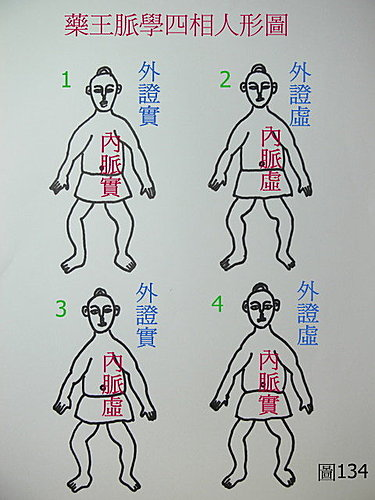

脈理醫理學 31.1：藥王脈學重要脈理模型‥‥‥四相人形圖‥‥解釋「脈」和「證」之間的關係和聯合運用（一）。
作者：陳建元
藥王脈學四相人形圖，是用來說明整個中醫診斷的正確架構〈圖134〉，解釋「脈」和「證」之間的關係，「脈」和「證」聯合運用的必要性，並補充歷代在診斷學上，發展的偏差處。
其中的圖1、圖2是代表「司外揣內系統」（以表知裡系統），這是最常見的系統，也是最常用，和最被強調的系統，當你看到一個病人，面白說話聲音無力、短氣，你會判斷說這是肺氣虛，你的依據是什麼？就是這個「司外揣內系統」，因為《內經》和歷代醫家告訴你，面白說話聲音無力、短氣，是體內的肺氣虛，而體外體內是一致相應的，所以當外證是面白說話聲音無力、短氣時，會相應體內的肺氣虛，同時，相應的脈象也會是虛弱的（脈象代表體內的情況）。這個規則被不停的運用著，沒有懷疑的運用著，尤其在近代脈學失傳，變成一種裝飾品之後，這種方式更是被強調的使用著，頭項強痛而惡寒，是太陽病，眩暈嘔吐寒熱往來，是少陽病，見一症即是，不必全悉，一切是那麼的理所當然，就是因為下意識認為這條規則是完全正確的，不自覺的使用著它。但事實上，在臨床上，會發現依這條規則來醫，很多病會好，但也很多病醫不好，問題出在哪裡？

問題出在還有另外一套相對的系統，藏在脈學之中，被神秘的隱藏著，圖3、圖4是代表「司外未必能揣內」的概念。〝司外未必能揣內〞在臨床上很常見，譬如脈理醫理學 32：平脈（二），有提到孕婦預產期的正確時間，不表現在外面，只表現在脈象上；譬如很多健美先生，你不要以為司外可以揣內，脈一把，整組壞光光，檢驗單到處都是紅字，以現代科學來看，就是多了那一大堆大塊肌肉，所以身體內臟的負擔過重，提早衰竭，健美先生的平均壽命不長，以中醫的陰陽平衡角度來看，就是操練過度，把內臟所藏的精氣精華，都抽到體表來使用了，外強而中乾，既然是外強而中乾，當然表示「司外未必能揣內」，如果你看他肌肉大，以為他心臟強壯，沒有脾氣虛，你就錯了，一把脈，發現不但脾氣虛，心臟也快操壞了。相反的，我們會看到一些老人，肌肉瘦小，你以為他氣血虛，錯了，一把脈，發現體內非常強壯，他是氣功大師，是外弱內強形態的。而這些外強中乾，外弱內強不只在這些人身上被發現，在一般人身上，也常被觀察到，這顯示司外揣內系統，有缺陷和縫隙，只是片面的真理，而不是全部的真理。
《素問方盛衰論》說：「形氣有餘，脈氣不足死。脈氣有餘，形氣不足生。」其實已經提示了這種內外可以相反的不對等現象，如果內外系統是一致的，則脈氣不足的時候，形氣也會不足，脈氣有餘的時候，形氣也會有餘，兩個會相應，而不會相反或不平行。
《靈樞外揣篇》說：「故遠者司外揣內，近者司內揣外」【註一】。則是說明有另外一套「司內揣外」系統的存在。這套系統其實就是脈法，脈法是測量人體裡面，卻可以說出你外在的表現和疾病症狀，。
古人很早就發現這個問題，因為司外未必能揣內，看外證未必就是體內的真實狀況的反應，單單核對外症（證），抓個主症來看病，然後再看兼症稍事加減，是行不通的（這種方式的有效率，只在2～3成左右），所以，早在《內經》時代，就提出要脈證合參，脈證合參的用意是，看外症（證）是一套系統，把脈又是另外一套系統，一套由外看內，一套由內看外，兩套合看，才不會被騙，所以，如果全然只用司外揣內系統來運作時，事實上，已經埋進了部分錯誤的因子在內，有人問？中醫為什麼會沒落？這不是答案之一嗎？偏差的半套系統，只剩下不到三分之一的威力。為什麼是三分之一，而不是二分之一？核對外面的證來看病是一套方法，分析裡面的脈來判別病機看病，又是一套方法，兩套方法比對之後，因為對照之下，會有相合和相反的現象，所以又衍生出一套系統來解決（即脈理醫理學 4.2.1：複式立法和複式治則），所以，單獨外證核對系統，威力只剩三分之一。
《大醫精誠論》：
張湛曰：『夫經方之難精，由來尚矣。』今病有內同而外異，亦有內異而外同，故五臟六腑之盈虛，血脈榮衛之通塞，固非耳目之所察，必先診候以審之。而寸 口關尺，有浮沉弦緊之亂；俞穴滲注，有高下淺深之差；肌膚筋骨，有厚薄剛柔之異。惟用心精微者，始方與言茲矣。今以至精至微之事，求之於至麤（粗）至淺之思，其不殆哉！若盈而益之，虛而損之，通而徹之，塞而壅之，寒而冷之，熱而溫之，是重加其疾，而望其生，吾見其死矣。故醫方卜筮，藝能之難精者也，既非神授，何以得其幽微？世有愚者，讀方三年，便謂天下無病可治；及治病三年，乃知天下無方可用。故學者必須博極醫源，精勤不倦，不得道聽途說，而言醫道已了，深自誤哉！〈唐．孫思邈〉
黃底字的部分，指出了內外病機可以不對等，有耳目可以查見者，也有耳目不能查見，必由脈診才能查見者。也指出了後世之習經方者，輕忽脈診草草帶過，以為用幾個粗淺的口問外症，司外揣內，便足以替代脈診，其實，是遠遠不夠的！
【註一】：
《靈樞外揣篇》：「黃帝曰：窘乎哉！昭昭之明不可蔽，其不可蔽，不失陰陽也。合而察之，切而驗之，見而得之，若清水明鏡之不失其形也。五音不彰，五色不明，五臟波蕩，若是則內外相襲，若鼓之應桴，響之應聲，影之似形。故遠者，司外揣內，近者，司內揣外，是謂陰陽之極，天地之蓋，請藏之靈蘭之室，弗敢使泄也。」
請藏之靈蘭之室，弗敢使泄也。→→→→如果大家都抱這種態度，把它藏在靈蘭密室，那麼，每個學中醫的人，都要從頭學起，西醫的醫學資訊，基本是公開的，大家能通用，相較之下，中西醫的落差，自然會很大，以前的中醫是不傳，現在的情況，則是想傳，卻已經沒有東西可以傳的窘境，中醫怎麼能不沒落呢？
【引用請先來信告知徵求同意，若有涉及販售營利等商業行為，版權所有拷貝盜用必究。】
【藥王脈學講壇】http://blog.xuite.net/drjychen/twblog